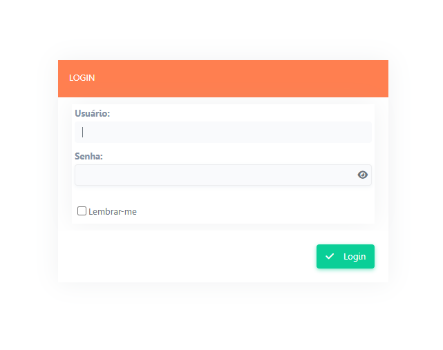
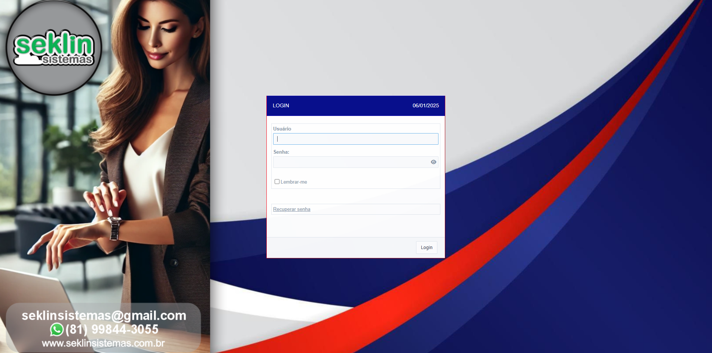

1. Simplicidade e Intuitividade
Nossos sistemas são projetados com foco no usuário. Com interfaces amigáveis e fáceis de usar, garantimos que qualquer pessoa, independentemente do nível de experiência, consiga operar nossas soluções com facilidade.

2. Alta Performance
Utilizamos as mais recentes tecnologias para desenvolver sistemas ágeis e robustos. Isso significa que você terá uma ferramenta confiável, com tempos de resposta rápidos e capacidade para lidar com grandes volumes de dados.

3. Personalização Total
Entendemos que cada cliente tem necessidades específicas. Por isso, nossos sistemas são completamente adaptáveis para se ajustarem à realidade e aos desafios do seu negócio.

4. Segurança de Dados
A proteção das suas informações é a nossa prioridade. Aplicamos as melhores práticas de segurança digital para garantir a integridade e a confidencialidade dos seus dados.
5. Suporte Ágil e Eficiente
Estamos sempre disponíveis para ajudá-lo. Nossa equipe de suporte oferece assistência técnica rápida e eficiente, garantindo o pleno funcionamento dos sistemas e a satisfação dos nossos clientes.
6. Integração e Escalabilidade
Nossos sistemas podem ser integrados a outras ferramentas e plataformas, permitindo que você conecte diferentes áreas do seu negócio. Além disso, nossas soluções crescem junto com sua empresa, adaptando-se às suas demandas.